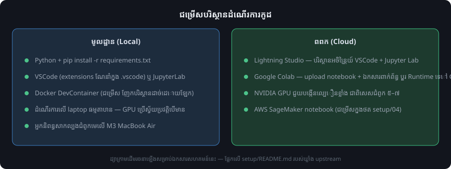

ការដំឡើងបរិស្ថាន
Note
ប្រភព៖ setup/README.md និង requirements.txt នៃឃ្លាំង upstream។


ជម្រើសបរិស្ថានទាំងអស់ — ដ្យាក្រាមដើមរចនាឡើងសម្រាប់ឯកសារសហគមន៍នេះ។
ចាប់ផ្តើមរហ័ស (Quickstart)
បើម៉ាស៊ីនរបស់អ្នកមាន Python រួចហើយ វិធីលឿនបំផុតគឺដំឡើង packages តាមឯកសារ
requirements.txt ពីថត root នៃឃ្លាំងកូដ៖
pip install -r requirements.txt
បញ្ជី packages ដែលត្រូវការ (តាម requirements.txt របស់ upstream)៖
Package |
កំណែអប្បបរមា |
ប្រើសម្រាប់ |
|---|---|---|
|
>= 2.2.2 |
គ្រប់ជំពូក (Intel macOS កំណត់ត្រឹម < 2.6) |
|
>= 4.0 |
គ្រប់ជំពូក |
|
>= 0.5.1 |
ch02 · ch04 · ch05 |
|
>= 3.7.1 |
ch04 · ch06 · ch07 |
|
>= 2.18.0 |
ch05 · ch06 · ch07 (Intel macOS >= 2.16.2) |
|
>= 4.66.1 |
ch05 · ch07 |
|
>= 1.26 |
ជា dependency នៃបណ្ណាល័យផ្សេងៗដូចជា torch និង pandas |
|
>= 2.2.1 |
ch06 |
|
>= 5.9.5 |
ch07 (ដំឡើងស្វ័យប្រវត្តិជាមួយ torch) |
ការដំឡើងលើ Google Colab
បើអ្នកដំណើរការ notebooks លើ Google Colab ដំឡើង dependencies ដោយរន់កូដខាងក្រោម ក្នុង cell ថ្មីនៅផ្នែកខាងលើ notebook៖
pip install uv && uv pip install --system -r https://raw.githubusercontent.com/rasbt/LLMs-from-scratch/refs/heads/main/requirements.txt
ជាជម្រើស បន្ទាប់ពី clone ឃ្លាំង អ្នកអាចដំឡើង dependencies សម្រាប់សម្ភារៈបន្ថែម (bonus) ទាំងអស់ពីថត root របស់គម្រោង៖
uv pip install --group bonus
ជំហានដំឡើងក្នុងមូលដ្ឋាន (Local)
ដំឡើង Python — បើមិនទាន់មាន សូមអានការណែនាំក្នុងថត 01_optional-python-setup-preferences និង 02_installing-python-libraries។
clone ឃ្លាំងកូដ (មើលទំព័រ ការទាញយកកូដ)។
ដំឡើង packages ដោយ
pip install -r requirements.txt។បើក notebook របស់ជំពូកដែលអ្នកចង់សិក្សាក្នុង JupyterLab ឬ VSCode។
អ្នកនិពន្ធក៏បានចែករំលែកវិធីសាស្ត្រផ្ទាល់ខ្លួនក្នុងការរៀបចំបរិស្ថាន Python ក្នុងវីដេអូ នៅលើ YouTube ផងដែរ។
ជម្រើស Docker DevContainer
បើអ្នកចង់បានបរិស្ថានអភិវឌ្ឍន៍ដែលញែក dependencies និងការកំណត់រចនាសម្ព័ន្ធរបស់គម្រោង ដាច់ដោយឡែក ការប្រើ Docker ជាដំណោះស្រាយដែលមានប្រសិទ្ធភាពខ្ពស់ — មិនចាំបាច់ដំឡើង packages ដោយដៃ ហើយបរិស្ថានអភិវឌ្ឍន៍មានភាពស្របគ្នាជានិច្ច។ មើលការណែនាំលម្អិតក្នុងថត 03_optional-docker-environment។
កម្មវិធីកែសម្រួលកូដ VSCode
ជម្រើសដែលអ្នកនិពន្ធប្រើគឺ Visual Studio Code (VSCode) ដែលអាចពង្រីកមុខងារដោយ plugins និង extensions ជាច្រើន។
Extensions ដែលណែនាំមានក្នុងថតរង .vscode។ វិធីដំឡើង៖
បើកថត
setupក្នុង VSCode (File → Open Folder...)។ចុចប៊ូតុង Install ក្នុង menu ដែលលោតមកនៅផ្នែកខាងក្រោមស្តាំ។
ឬផ្លាស់ទីថត extensions ទៅ root នៃឃ្លាំង ដើម្បីឱ្យ VSCode ពិនិត្យស្វ័យប្រវត្តិរាល់ពេល
បើកថត LLMs-from-scratch៖
mv setup/.vscode ./
ធនធាន Cloud
កូដអាចដំណើរការលើកុំព្យូទ័រធម្មតាដោយគ្មាន GPU ជាក់លាក់ ប៉ុន្តែវេទិកា cloud ដែលមាន NVIDIA GPU អាចកាត់បន្ថយរយៈពេលដំណើរការបានច្រើន ជាពិសេសជំពូក ៥ ដល់ ៧។
Lightning Studio
វេទិកា Lightning AI Studio អនុញ្ញាតឱ្យរៀបចំបរិស្ថានអចិន្ត្រៃយ៍ (persistent) ហើយប្រើបានទាំង VSCode និង Jupyter Lab លើ CPU និង GPU ក្នុង cloud។ បន្ទាប់ពីចាប់ផ្តើម Studio ថ្មី បើក terminal ហើយដំណើរការ៖
git clone https://github.com/rasbt/LLMs-from-scratch.git
cd LLMs-from-scratch
pip install -r requirements.txt
ខុសពី Google Colab ជំហានទាំងនេះត្រូវដំណើរការតែម្តងគត់ ព្រោះបរិស្ថាន Lightning AI Studio មានលក្ខណៈអចិន្ត្រៃយ៍ ទោះអ្នកប្តូររវាងម៉ាស៊ីន CPU និង GPU ក៏ដោយ។ បន្ទាប់មកអាចភ្ជាប់ GPU ដើម្បីបង្កើនល្បឿន ឧទាហរណ៍ពេល pretrain ម៉ូដែលក្នុងជំពូក ៥ ឬ finetune ក្នុងជំពូក ៦ និង ៧។
Google Colab
បើក notebook របស់ជំពូកតាម menu GitHub ឬអូស notebook ចូលផ្នែក Upload។
upload ឯកសារពាក់ព័ន្ធ (ឯកសារ dataset និងឯកសារ
.pyដែល notebook import) ចូលបរិស្ថាន Colab ផងដែរ។ជាជម្រើស ប្តូរ Runtime ដើម្បីដំណើរការលើ GPU។
ដោះស្រាយបញ្ហា (Troubleshooting)
Upstream មានមគ្គុទ្ទេសក៍ដោះស្រាយបញ្ហា៖ troubleshooting.md។ បើនៅមានសំណួរ សូមសួរក្នុងវេទិកា Discussions នៃឃ្លាំង upstream។
Tip
បន្ទាប់៖ ទាញយកកូដ និងស្វែងយល់ពីរចនាសម្ព័ន្ធឃ្លាំងក្នុងទំព័រ ការទាញយកកូដ។